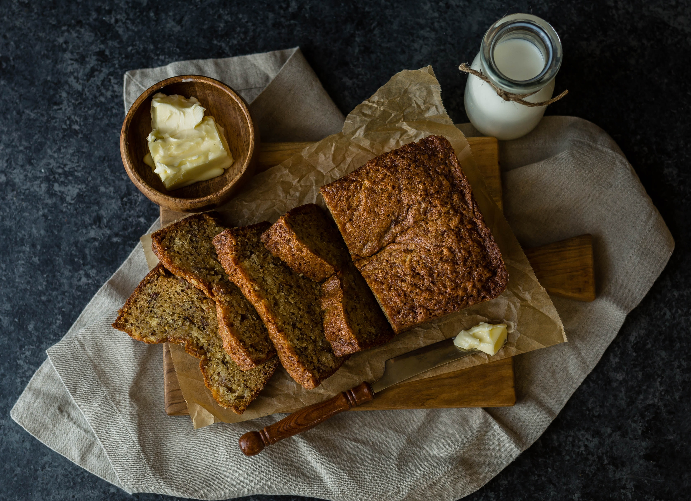

Banana Bread

Ingredients:
- 2 Cups Flour
- 1 Teaspoon Baking Soda
- 1/4 Teaspoon Salt
- 1 Egg
- 1 1/8 Cup Sugar
- 1/2 Cup Vegetable Oil
- 2 Tablespoons Buttermilk or Milk
- 1/2 Teaspoon Vanilla
- 3 Mashed Bananas
- Chopped Walnuts or Chocolate Chips(optional)
Recipe:
- Preaheat oven to 325 degrees.
- Add flour, baking soda, and and salt to a small bowl.
- Mix egg, sugar, and oil until well combined.
- Mix together wet and dry ingredients.
- Add milk, vanilla, and bananas into mixture until well incorperated.
- Mix in other add-ins such as walnuts.
- Pour batter into a well greased pan.
- Cook for 20 - 30 minutes until toothpick comes out clean.